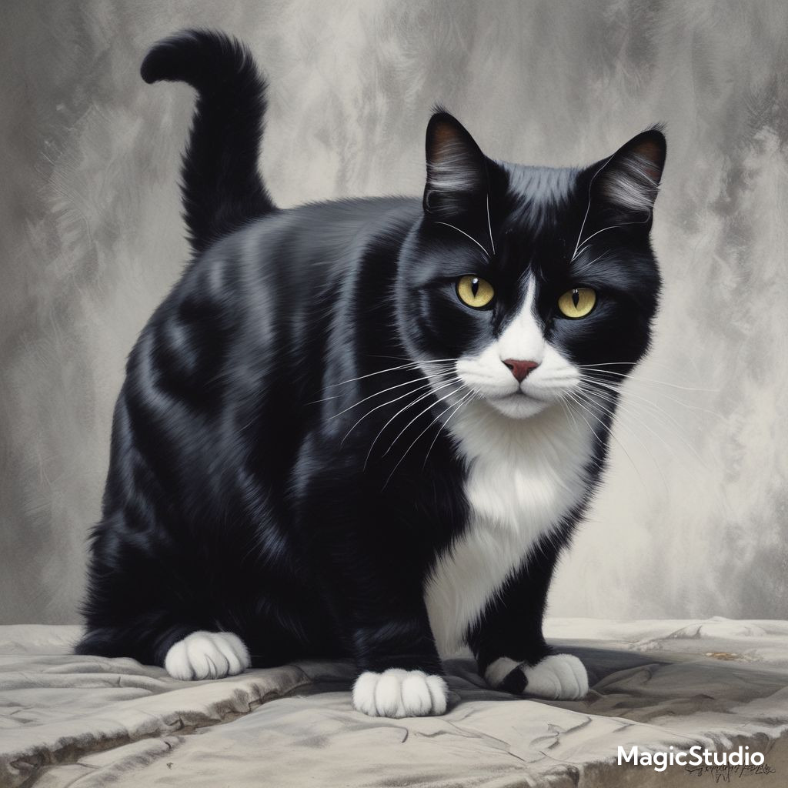
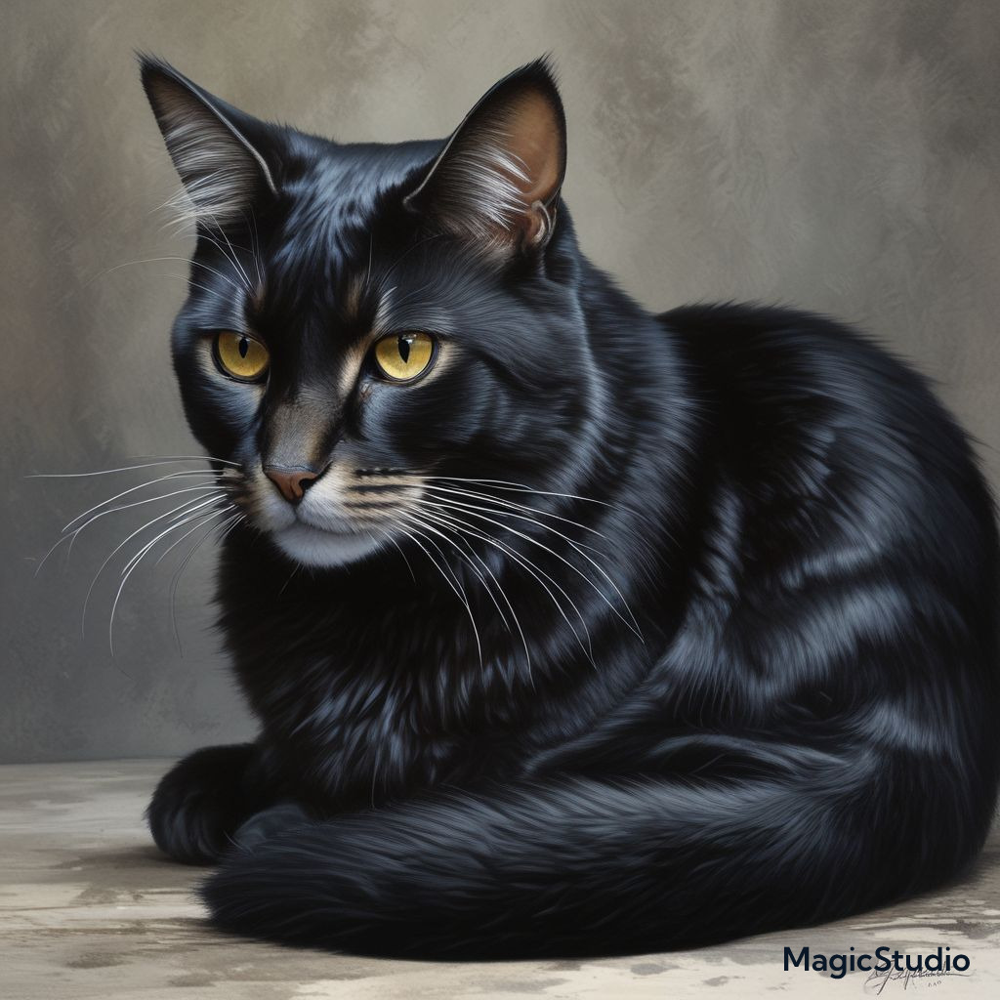
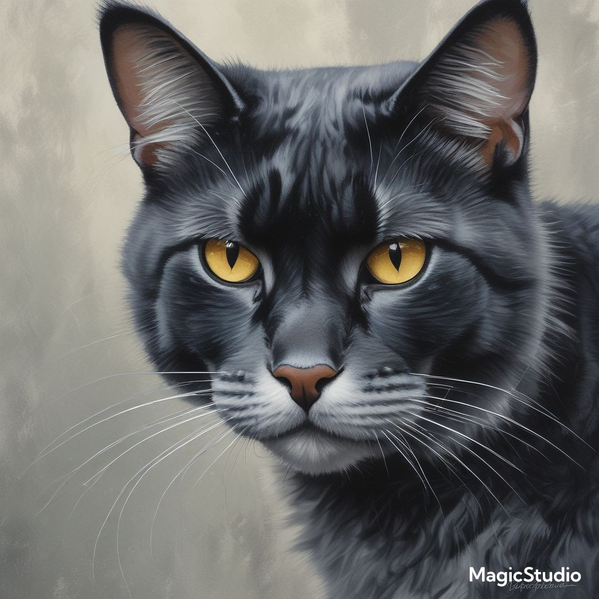
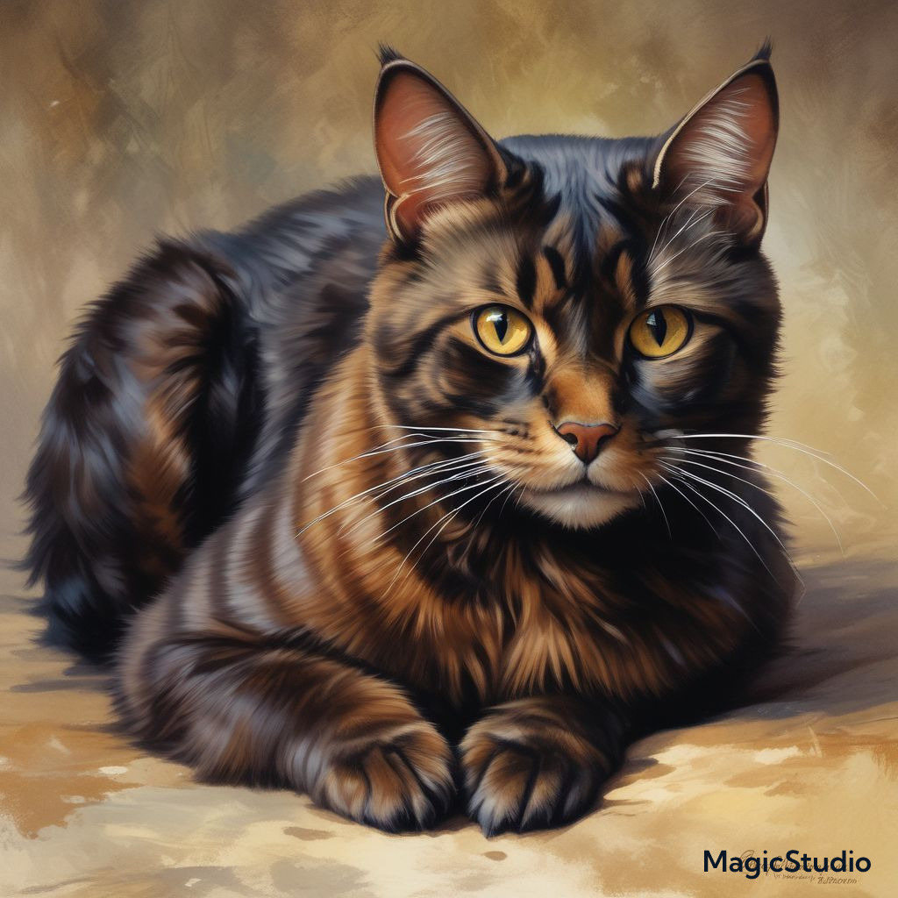
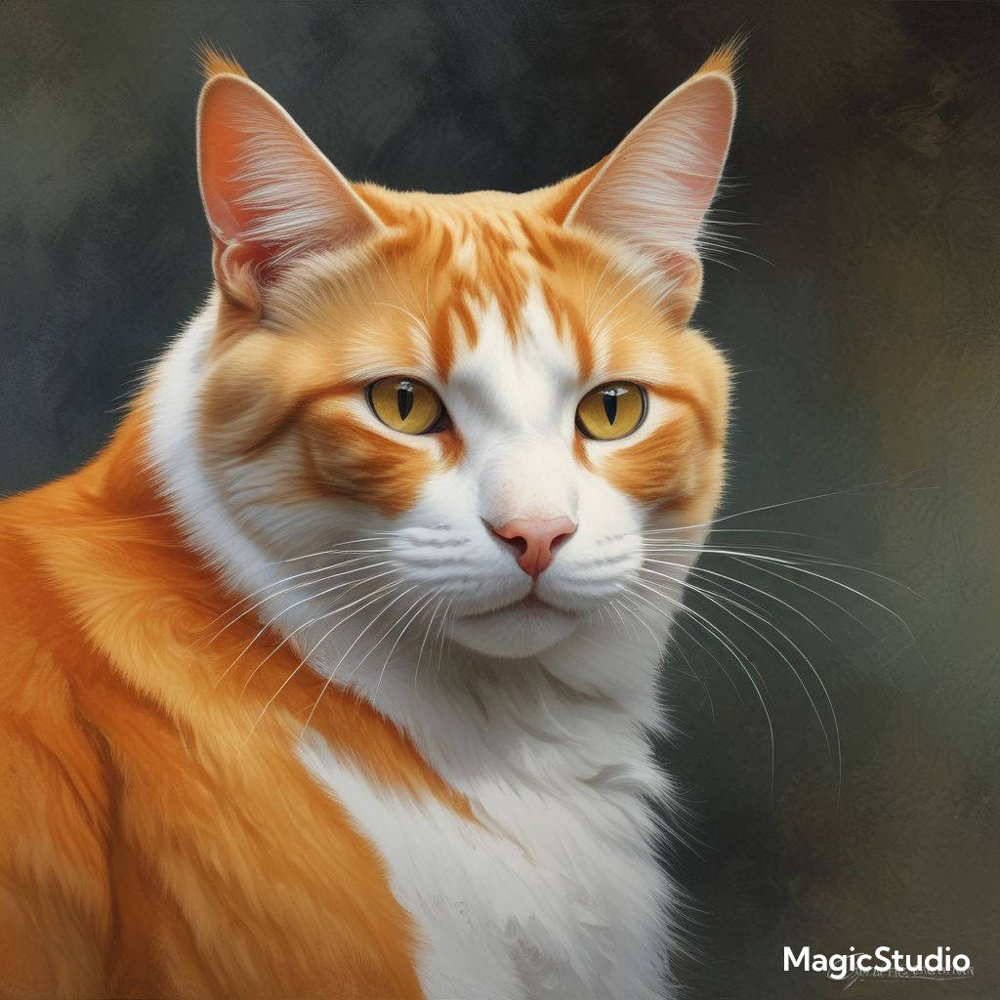
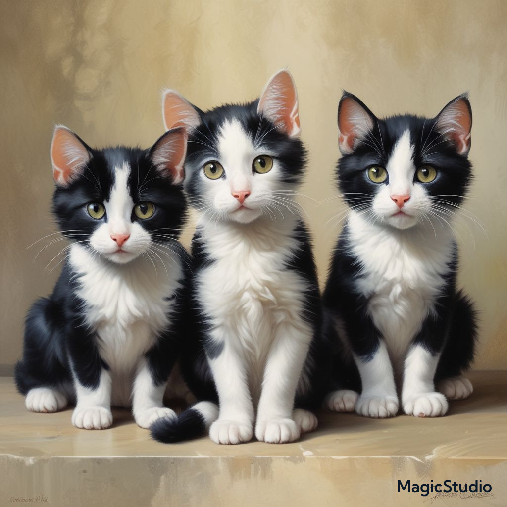
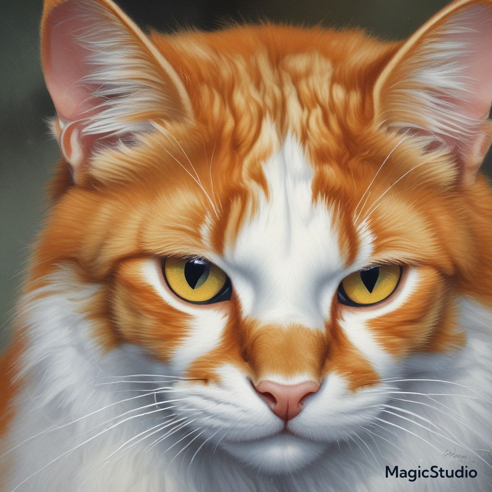

Author: Arsenii Malevskyi
Transleted from Ukrainian by: Aresenii Malevskyi
Lapa

Chapter1 Lapa
Do you know who is Lapa? Oh, Lapa is strong of the whole district, Lapa is that one who protects his village from evil dogs. I have never seen the cat who didn't know his name. But then his wife appeared and children. And everything went wrong — dogs' attacks were more successful and he even had a rival in bottles with who he oftenly lost. Lapa was retiring... Untile...
Chapter2 Uncle
Lapa heard that on the nearby pier, where his uncle lived the seagulls' attack happened(the biggest for ten years). Even with dogs' help the defence was REALLY BAD. After that Lapa fast went there.
Capter3 kitten with white eyes
The first stop was town (about twenty minutes of walking). Cats weren't kind there but they had respect. There were wooden houses there but all cats slept outside. When Lapa asked most answered that didn't know.
At night Lapa went to the houses. He imagened that cats weren't asleep but they snored. At once he saw Martha going to the town and everything started being more like an adventure. He jumped into the house. Darkness... But, no, he saw kittens' eyes and one had white eye. That's why cats didn't sleep there.
Chapter4 Dark park
-- The next stop is my sister's house the forest. Near one half of the way she will meet me -- said to the sitizens of Southern City Lapa.
He walked near three hours and then, when it started to be dark he met his sister. She said that they had to go through dogs' city. Everything was Ok until one seagull, which was flying screamed. All the dogs ran to them. They were running and drifting. Until they get to the bushes, there cats hid and dogs jumped and ran away. Hooh... But it's still a lot to walk. House was REALLY big. Lapa wasn't eating so much from his village.
Chapter5 Cousin
The next stop is their cousin's house. Forty minutes walking. After two dogs' attacks and one seagull's, during which they had to hide under leaves, two cats went to the road. But there it wasn't better because from the sky flied crows and they could not hide in the grass. Lapa and his sister jumped away and two crows ran behind them. On the way Lapa get the bottle with watter and crows get wet. Here they found their cousin Kathrine. So three cats Lapa, Kathrine and Elizabeth went to the pier.
Chapter6 that time on the pier
And that time on the pier, attack started and it was even bigger than the last. Cats and kittens ran away from the biggest city of this neighborhood. some of them tried to defence the city. Feather, wool, stones and spray flied. Cats walked back to the end of the pier. There were deathes from both sides. But at once Lapa, Kathrin and Elizabeth appeared on the start of the pier. Lapa got the harpoon and the shoot killed about five seagulls. Kathrin and Elizabeth started to kill others. They won.
Chapter 7 The regullar Lapa's day
Lapa usually sleeps in the warmest place, on he tubes and rearly sleeps in his house. Thewn he spends time with his family, wife and children. Until someone brigs food for cats to eat. And than everything starts again -- Lapa fights with his rival women, Black, Orange and Hot, kick each other and Lapa, Rival. But unfortunatly Lapa loves it when people walk to him to make him eat and pet. In the evening Lapa takes the kittens. And Black goes to her friends.

Black
Black is Lapa's wife. She's kind and generous respects her husband, but sometimes espessually when it's about her and Lapa's kittens she's more clever than her husband. For example latly Cat-From-Base, the president of near city called Base came to their town and Lapa started summit then somethig went wrong and he went tothe children.Lapa was trying to stop him but he couldn't but Black kisked him twice by head. After that all of the dogs was afraid of her.

Cat-from-Base and his father
His is an empiror of one of the greatest empires ever. This cat is stronger than Lapa and Rival together.
But what history does he have!
To know that let's go to the past where their parents lived!
So in the past there was three cats' empires, three dogs' and еmpіrеs of birds. Everything started with unification of cat empires.
Lapa young son of pier empire's empiror has been engaged with Black — Fishing Village empiror's daughter and he's got union with Base empire. Together they attacked Yardian empire of dogs. The army of cats had more than two hundred of soldiers and dog's army had only twenty so cats destroyed them. In one night cats changed colours on the map more than in decades. Dogs lost in many battles so cats went to biggest city. Their last chanse was to get help from birds' strongs but they already got the union. Exactly not all the birds' empires only seagulls which were the strongest of them. For that cats gave beach to them.
So Martha and Marthin, queen and king, had to sign the document about capitulation. Cats' empires growed up so fast and birds even didn't see them because the territory of seagulls became bigger. Their land was even bigger than territory of some birds and the birds didn't like it. On the birds' summit started to be nervous yes it started to be nervous not angry. If cats destroyed so big empires won't they destroy them and of course they wanted to make an agreement. Because of giving territory cats had to conquer new and exactly Galata. There everything was OK. Agreement with cats allowed for birds to fly on the cats' land and territory which belong to cats but birds could use it. Cats became a new giant on the map. Who wasn't afraid of them was nervous about their attack even seagulls. But they came from army to regular country. A year has gone... Seagulls and owls were already angry because of that they agreed for only some meters. The son of an empiror Lapa growed up and had to be an empiror of an empire. Simple yes? But an empiror of which coutry?
Of his or his wife's empire? for that the war started, yes, the first for many years war between cats' empires! Lapa with his wife and sister found help in far from the war city called Base. In one of the biggest battles were fighted four armies died dogs' prince Marthin fifth and general of pier empire who's also Lapa's brother. Cats even didn't see how they destroyed dogs' city Horsevill which was dogs' by agreement. Death puppy of main family in the empire was the last thing for dogs they weren't afraid even of birds. After dogs' king Robart third's speech on the bird's summit he had the agreement for attack. No one among living now doesn't what did the king said there but it made them afraid more than they were afraid of cats if dogs will lost the attack. So armies of kings Robart and Krant started attack and, soon cats lost and had to capitulate.

Rival
He's a stong cat who is often fighting with Lapa. They usually defence the town from dogs together. His father is brother of Cat-From-Base and mother is a sister of Queen the president of Southern City and his brother is a president of Yardian republic of cats. After cats' empires lost in the Independence war his family mostly formed the government of the independent countries because their new law said that unstraight (like brother, sister, cousin, uncle, aunt of the empiror(king) crowner who isn't intersted in his epire's gouverment have to get the crown between the winning in the independence war and choosing a new president in two months' time some of his reletives are still main in countries like Max or Queen and some relatives lost in many elections.

Hot
Hot is Rival's wife and they are good but really different pair because her family died during the independence war defencing empires while Rival's family was controlling the army on the other side and because of that he is generous like Lapa and always gives food to women and children even when he's hungry and she is mean like other orange cats (mostly). But finally the war ended. Hot is a friend of Black and Orange. Unfortunatly Black is black and she is even more generous than her husband, why does she has friends like orange and Hot who are mean none knows.

Kittens (
of Lapa and Black)
There are five of them but usually exits only one or two. The family has it's own obligations, rest time and even schedule. So Lapa wakes up early, earlier than the sun but not earlier than the kittens, then he takes them on the territory then gives them to Black. Near the evening father takes the children to the end of the work sometimes takes them on an excursion to another city in other cases they meet other cats and dogs and Black goes to her friends to walk on the beach. Mostly cat mums don't teach kittens but Black does.˜
Afraid (
Masha)
She is really afraid of exiting not only the city and even down levels. But she has her own cause. Once upon a time after the ending of the independence war when everyone was waiting an attack from independence countrys' union with dogs, Lapa and Black went on summit in the Base, because of that they had to leave the baby kittens for the whole day. Rival had to defence them. And on Masha and Hot was care. But attack for which everybody prepaired for, happend during prepairing. Dogs with Martha in charge attacked and Rival was in the corner. Hot had them for some seconds and Masha almost escaped with kittens but Martha kicked him.

Orange
Orange is the youngest daughter in the family of two pet cats. She has two sisters which are old now one of them is a wife of pier empire's empiror and another is responsible from cats for big territory between Lesser and Pier empirer and both are black because mother was orange and black and father was black, white and a bite orange. Her sister is Lapa's aunt. She lived with her sister in Big Pier until on the cats summit she went to the dogs' city Restaurant as an embassy. Orange (for that time) didn't like the other, older sister because in war between cats' empires when her family was on Base empire's side and wanted Lapa personally to say the epiror of which empire he wanted to be she killed Lapa's brother when he understood what's happening1 and exactly for that and to unite two big families in Big Pier's gouverment2. because of that or because of love to one cat that she met on summit from Base she went to downer Galata and exactly to Base. there she met Lapa, Rival3 and Cat-From-Base which was the cat she met on the summit. But then she realized that she loves Lapa more and went to him4.
1 Mostly cats in cities didn't know why is that war happening and Lapa's brother was among them. He only realized everything when Base's soldier told him everything (in Base there wasn't so much disinformation). Soon he formed a sicret union between gouverments in Base and Southern City and regullar cats in Big Pier to make a revolution. Really he died when tried to kill Lapa's uncle.
2 When Hot's parents came to Big Pier the gouverment fully belonged to Lapa's family but they were popular too because weren't from Bulgaria as others and they borned as pets. So soon revolution started and her family got the part in the gouverment but empiror was still from Lapa's family. Soon during war between cats' empires the Hot's family went to Base to defence Lapa. The parents died during Lapa Defence Union lost in empiror's castle attack but her sisters are still having a small part in Pier's gouverment and their friends are still making revolutions on the west of the empire.
3 Between war between cats' empires and Independing war cats in Southern City were prepairing for revolution for democracy. Even then Rival was Lapa's friend and he wasn't agree about a lot of things in revolution. Queen's sister told him to go to the Base and take a rest. There he told Lapa and Cat-From-Base the plan but only then he realized that he's between two fires Lapa and Cat-From-Base and his own family.
4 After independence war ended Lapa could became an empiror of Fishing Village but the curent empiror wanted him to save engagement with Black forever. And Cat-From-Base wasn't agree for keeping them so Lapa had to get the crown to have place to live and so he had to get a divorce with Hot and he loved Black more.
All of the characters in this book are real and you can find them in Bulgaria, Varna, Asparuhovo